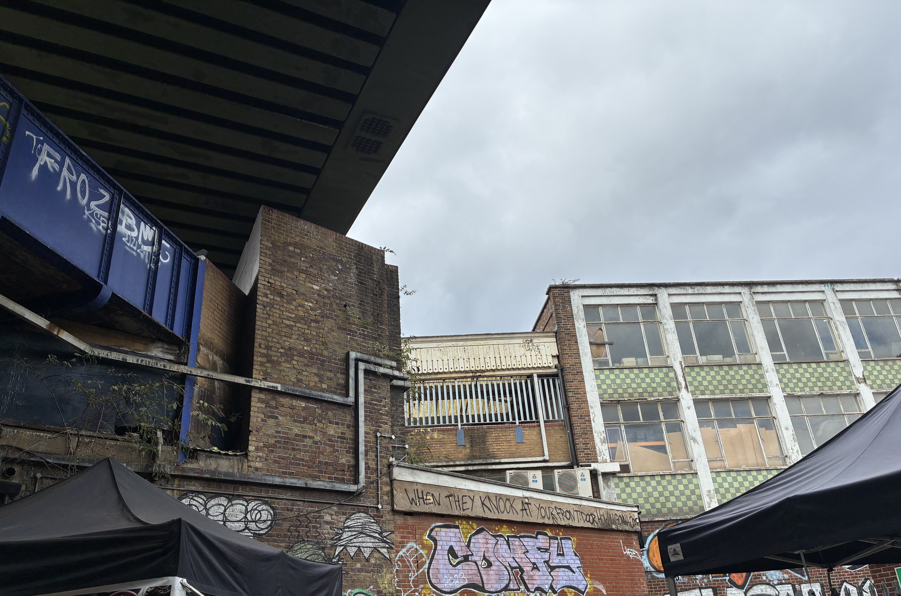
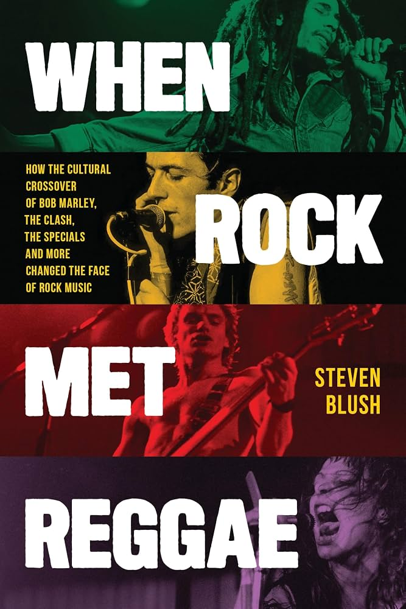

Rock band The Clash gained popularity as part of the UK punk scene in the 1970s.
Despite being one of the frontrunners of punk, they took eclectic influences from genres such as ska and hip-hop as well.
As seen below, they are also heavily influenced by reggae and the work of one of its pioneers, Bob Marley.

"The Guns of Brixton" lyrics in Brixton
Brixton is a working-class city in the UK with a large Caribbean immigrant population, which ended up therefore being a
hub for reggae and dub music. This image shows the opening lyrics of The Clash song "The Guns of Brixton":
"When they kick you at your front door, how you gonna come?"
Paul Simonon, bassist and songwriter for The Clash who grew up in Brixton, was heavily influenced by this
scene and incorporated that into the bassline and flow of this song. Listen to it below.

Book: When Rock Met Reggae by Steven Blush
Steven Blush, a prominent voice in music journalism and genre crossovers, has wrote and researched extensively on the interplay
between rock and reggae music, as shown in this book. The extended title of the book is "When Rock Met Reggae: How the Cultural Crossover of Bob Marley, The Clash, The Specials and More Changed the Face of Rock Music."
In the conversation between punk and reggae, Bob Marley was also touched by The Clash's influence from his music, and mentions them in his own song,
"Punky Reggae Party": "I'm saying, The Wailers will be there, // The Damned, The Jam, The Clash..." Listen to the song below.